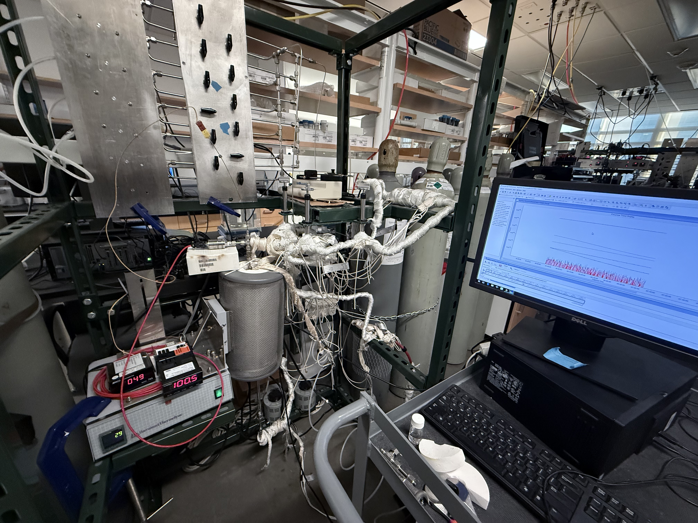
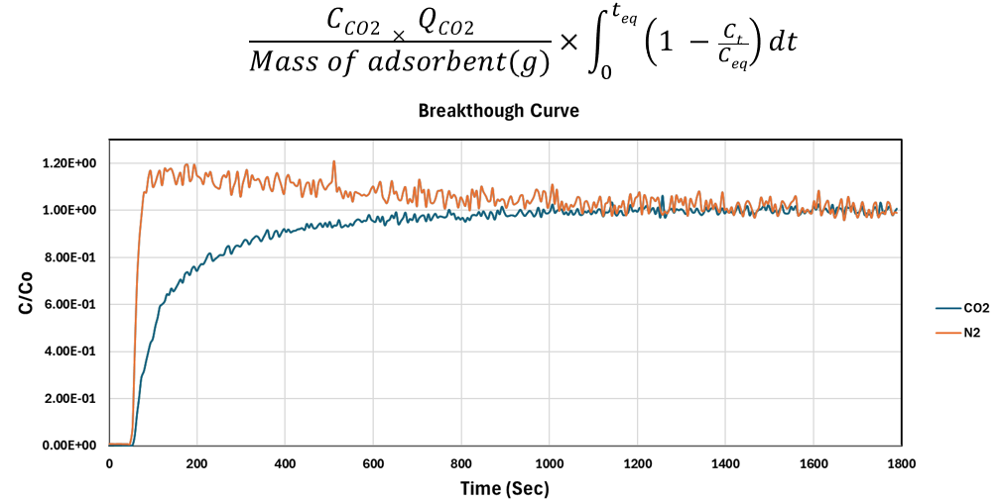

Adsorption · Fixed-bed experiments
CO₂ Capture and Sorbent Research
I’m learning how to separate a material’s behavior from the effects of the experiment used to measure it.
Building a reliable comparison
My high-temperature adsorption work has involved fixed-bed breakthrough experiments with controlled CO₂/N₂ feeds, humidified conditions, and mass spectrometry. I’ve operated experiments across adsorption and regeneration conditions in the 300–500°C range and worked with magnesium oxide for standardizing pretreatment, regeneration, and data integration.
In a breakthrough experiment, I follow the outlet CO₂ response as the sorbent is exposed to the feed. Interpreting that response requires more than finding the area under a curve. I also need to account for the baseline, the timing of the feed change, and the assumptions used in the calculation. Working through those details has made me more careful about treating a calculated capacity as a result that needs to be checked.


Developing the Ni–Ce experiments
My next stage is to compare the hydroxide and calcined oxide forms of nickel–cerium materials. The planned tests at 25°C and 50°C will help me compare their behavior and explore conditions relevant to flue-gas applications. XRD and BET characterization will help connect those measurements to material structure and surface properties.
I’m interested in building an experiment plan where each comparison answers a specific question. Humidity effects are a possible later step, with FTIR and D₂O experiments discussed as ways to investigate where water binds.
| Comparison | Purpose | Status |
|---|---|---|
| Hydroxide versus calcined oxide | Compare the two material forms | Planned |
| 25°C versus 50°C | Explore temperature-dependent adsorption behavior | Planned |
| XRD and BET characterization | Relate structure and surface properties to adsorption | Planned |